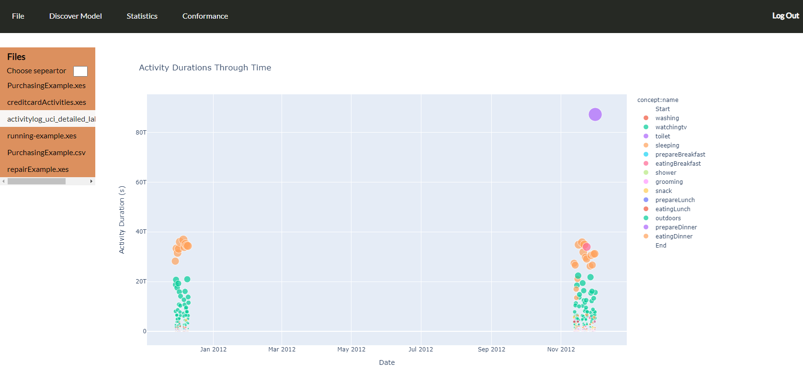
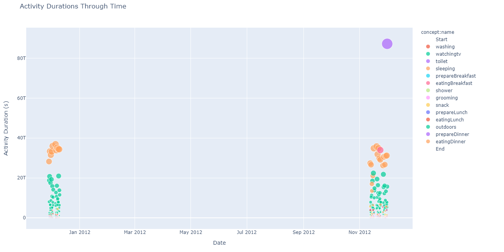

Activities Duration over time¶
As process runs and activities happen, it is important to know the duration of each activity so as to uncover bottlenecks.
From menu Visualizations choose Activities Duration over time. A bubble plot is created with the duration of each activity, colored by activity name. The size of bubble corresponds to the duration of the activity in seconds. Hover over the bubble to see the name of the activity, the date that happend and the duration of the activity in seconds. By clicking on the activities of the plot ledgend, makes activities to dissapear from the plot so as to keep only the interesting activities on the plot. The plot can be saved to a file.
 